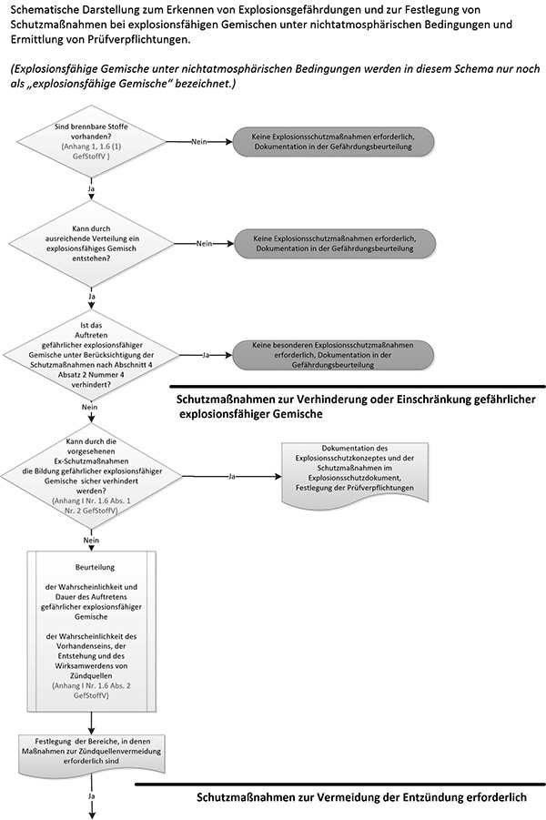
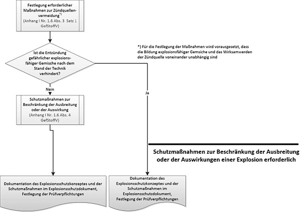

4 Vorgehensweise für die Beurteilung und Vermeidung von Explosionsgefährdungen bei Vorliegen explosionsfähiger Gemische unter nichtatmosphärischen Bedingungen
(1) Explosionsfähige Gemische bei nichtatmosphärischen Bedingungen (in diesem Abschnitt kurz nur als explosionsfähige Gemische bezeichnet) treten in der Regel nur im Inneren von Behältern und Umschließungen auf.
(2) Im Rahmen seiner Verpflichtung nach § 5 ArbSchG in Verbindung mit § 6 Absatz 8 GefStoffV hat der Arbeitgeber die Gefährdung seiner Beschäftigten durch Explosionen zu ermitteln, zu beurteilen und die notwendigen Schutzmaßnahmen abzuleiten. Die allgemeine Vorgehensweise ist im Ablaufdiagramm in Abbildung 2 gezeigt. Dabei sind die folgenden Gesichtspunkte in der genannten Reihenfolge zu beachten:
- Es ist zu prüfen, ob brennbare feste, flüssige, gasförmige oder staubförmige Stoffe betriebsmäßig vorhanden sind oder unter den in Betracht zu ziehenden Betriebszuständen gebildet werden können. Siehe hierzu TRGS 721. Ist dies nicht der Fall, wird dies in der Gefährdungsbeurteilung dokumentiert, und es sind keine Explosionsschutzmaßnahmen erforderlich.
- Wenn gemäß Nummer 1 brennbare Stoffe betriebsmäßig vorhanden sind oder gebildet werden können, muss festgestellt werden, ob nach Art des Auftretens dieser brennbaren Stoffe mit der Bildung explosionsfähiger Gemische zu rechnen ist. Siehe hierzu TRGS 721.
- Es ist zu prüfen, ob Stoffe eingesetzt werden können, die keine explosionsfähigen Gemische bilden können. Werden ausschließlich Stoffe eingesetzt, die keine explosionsfähigen Gemische bilden können, wird dies in der Gefährdungsbeurteilung dokumentiert, und es sind keine Explosionsschutzmaßnahmen erforderlich.
- Es ist zu beurteilen, ob unter Berücksichtigung
| a) | passiver technischer Maßnahmen, wie z. B. Dichtheit von Behältern/Anlagen, |
| b) | organisatorischer Maßnahmen, wie z. B. Beseitigung von Staubablagerungen, oder |
| c) | natürlicher Lüftung |
verhindert ist, dass gefährliche explosionsfähige Gemische auftreten können. Ist das Auftreten eines gefährlichen explosionsfähigen Gemisches dadurch verhindert, wird dies in der Gefährdungsbeurteilung dokumentiert. Es werden keine weiteren Schutzmaßnahmen definiert.
- Es ist zu beurteilen, ob durch aktive technische Schutzmaßnahmen, wie z. B. sicherheitsrelevante MSR-Einrichtungen im Sinne der TRGS 725, das Auftreten gefährlicher explosionsfähiger Gemische sicher verhindert ist (zu den Schutzmaßnahmen siehe TRGS 722 bzw. 725).
- Wenn durch die getroffenen besonderen Schutzmaßnahmen das Auftreten explosionsfähiger Gemische in einer gefahrdrohenden Menge sicher verhindert ist, sind keine weiteren Schutzmaßnahmen erforderlich.
- Ist das Auftreten gefährlicher explosionsfähiger Gemische nicht sicher verhindert, sind die Wahrscheinlichkeit und Dauer des Auftretens gefährlicher explosionsfähiger Gemische und die Wahrscheinlichkeit des Vorhandenseins, der Entstehung und des Wirksamwerdens von Zündquellen zu bewerten.
- Die Bereiche, in denen Maßnahmen zur Zündquellenvermeidung erforderlich sind, sind festzulegen.
- Für die Festlegung von Maßnahmen zur Zündquellenvermeidung wird vorausgesetzt, dass das Auftreten gefährlicher explosionsfähiger Gemische und das Wirksamwerden der Zündquelle voneinander unabhängig sind. Die Fälle, in denen keine Unabhängigkeit zwischen dem Auftreten der gefährlichen explosionsfähigen Gemische und der Zündquelle gegeben ist, erfordern in der Regel Maßnahmen des konstruktiven Explosionsschutzes oder eine Konzeptänderung, die in einer gesonderten Betrachtung festzulegen sind.
- Im Rahmen der Gefährdungsbeurteilung erfolgt die Festlegung der erforderlichen Schutzmaßnahmen zur Zündquellenvermeidung auf Basis der Bewertung zu Wahrscheinlichkeit und Dauer des Auftretens gefährlicher explosionsfähiger Gemische.
- Ist die Entzündung eines gefährlichen explosionsfähigen Gemisches nicht sicher verhindert, sind Schutzmaßnahmen zur Beschränkung der Ausbreitung oder der Auswirkung der Explosion zu treffen.
(3) In der Regel ist den Maßnahmen zur Vermeidung gefährlicher explosionsfähiger Gemische sicherheitstechnisch Vorrang zu geben. Es ist deshalb zunächst zu überlegen, ob und wie weit diese Maßnahmen sinnvoll angewendet werden können. Führt diese Überlegung nicht zu einer befriedigenden Lösung, so sind nach fachkundigem Ermessen Schutzmaßnahmen gemäß Absatz 2 zur Vermeidung der Entzündung oder zur Beschränkung der Auswirkungen anzuwenden.
(4) Die erforderlichen Explosionsschutzmaßnahmen nach Absatz 2 Nummer 5 bis 11 müssen im Rahmen eines in sich widerspruchsfreien Explosionsschutzkonzeptes ausgewählt und bewertet werden.
(5) Für die getroffenen besonderen Schutzmaßnahmen nach Absatz 2 Nummer 5 bis 11 sind Prüfumfang und -fristen festzulegen.
(6) Die Ergebnisse der Gefährdungsbeurteilung sind nach § 6 Absatz 9 GefStoffV zu dokumentieren (Explosionsschutzdokument).
(7) Der Prozess der Gefährdungsbeurteilung ist für den Fall der das übliche Maß nicht überschreitenden Auswirkungen einer Explosion in Abbildung 2 in Form eines Ablaufdiagramms grafisch dargestellt.
(8) Bei der Gefährdungsbeurteilung von Gemischen ist zu beachten, dass sich die nach Norm ermittelten sicherheitstechnischen Kenngrößen auf atmosphärische Bedingungen beziehen und nicht ohne weiteres auf andere Bedingungen (nichtatmosphärische Bedingungen, andere Oxidationsmittel als Luft) übertragen werden können. Daten aus Normen und Tabellenwerken sind für explosionsfähige Gemische in der Regel nicht verwendbar. Stärkere Oxidationsmittel als Luft, z. B. reiner Sauerstoff, führen in der Regel zu sehr viel heftigeren Reaktionen.


Abbildung 2: Bewertung und Festlegung von Schutzmaßnahmen für Gemische unter nichtatmosphärischen Bedingungen.